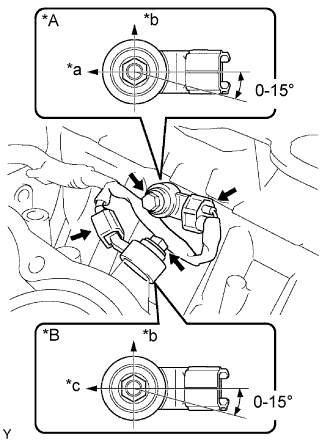

ДАТЧИК ДЕТОНАЦИИ > УСТАНОВКА |
| 1. УСТАНОВИТЕ ДАТЧИК ДЕТОНАЦИИ |
|  |
Установите 2 датчика и закрепите их 2 болтами, как показано на рисунке.
| *A | для ряда 2 |
| *B | для ряда 1 |
| *a | Двигатель Задние |
| *b | Верх |
| *c | Передняя сторона двигателя |
Подсоедините 2 разъема датчиков.
| 2. УСТАНОВИТЕ ОТВОДЯЩУЮ ТРУБКУ СИСТЕМЫ ОХЛАЖДЕНИЯ № 1 |
Установите отводящую трубку системы охлаждения и закрепите ее 2 гайками и болтом.
Установите 3 зажима жгута проводов.
| 3. УСТАНОВИТЕ КРЫШКУ ГОЛОВКИ БЛОКА ЦИЛИНДРОВ В СБОРЕ (для ряда 1) |
Установите головку блока цилиндров (Нажмите здесь).